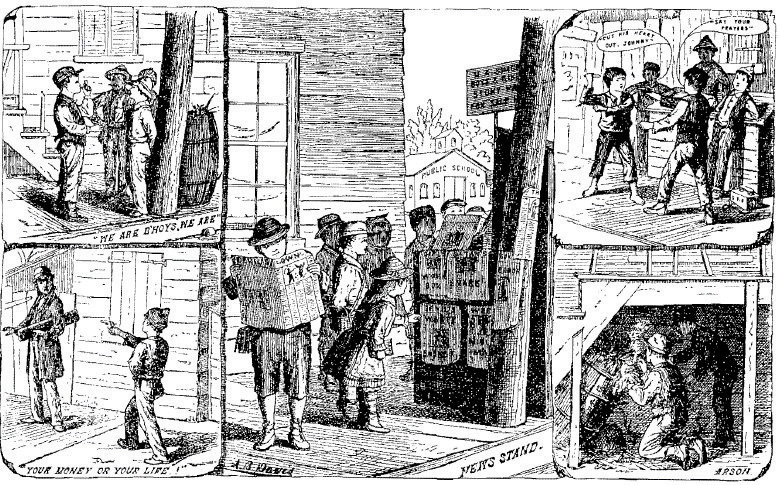
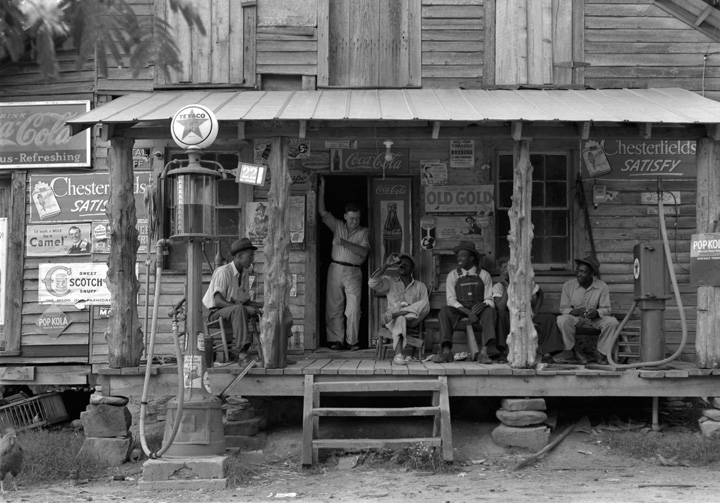

After reading this section, you should be able to answer the following questions:
The meaning of federalism has changed over time. During the first decades of the republic, many politicians held that states’ rightsAn approach to federalism that holds that each state entered into a compact in ratifying the Constitution and can therefore decide whether or not to obey a law it considers unconstitutional. allowed states to disobey any national government that in their view exceeded its powers. Such a doctrine was largely discredited after the Civil War. Then dual federalismAn approach to federalism that divides power between national and state governments into distinct, clearly demarcated domains of authority., a clear division of labor between national and state government, became the dominant doctrine. During the New Deal of the 1930s, cooperative federalismAn approach to federalism that sees national, state, and local governments working together to address problems and implement public policies in numerous domains., whereby federal and state governments work together to solve problems, emerged and held sway until the 1960s. Since then, the situation is summarized by the term competitive federalismAn approach to federalism that stresses the conflict and compromise between national, state, and local governments., whereby responsibilities are assigned based on whether the national government or the state is thought to be best able to handle the task.
The ink had barely dried on the Constitution when disputes arose over federalism. Treasury Secretary Alexander Hamilton hoped to build a strong national economic system; Secretary of State Thomas Jefferson favored a limited national government. Hamiltonian and Jeffersonian factions in President George Washington’s cabinet led to the first political parties: respectively, the Federalists, who favored national supremacy, and the Republicans, who supported states’ rights.
In 1798, Federalists passed the Alien and Sedition Acts, outlawing malicious criticism of the government and authorizing the president to deport enemy aliens. In response, the Republican Jefferson drafted a resolution passed by Kentucky’s legislature, the first states’ rights manifesto. It set forth a compact theory, claiming that states had voluntarily entered into a “compact” to ratify the Constitution. Consequently, each state could engage in “nullification” and “judge for itself” if an act was constitutional and refuse to enforce it.Forrest McDonald, States’ Rights and the Union: Imperium in Imperio, 1776–1876 (Lawrence: University Press of Kansas, 2000), 38–43. However, Jefferson shelved states’ rights when, as president, he directed the national government to purchase the enormous Louisiana Territory from France in 1803.
Alien and Sedition Acts
Read more about the Alien and Sedition Acts online at http://www.loc.gov/rr/program/bib/ourdocs/Alien.html.
Jefferson’s Role
Read more about Jefferson’s role online at http://www.loc.gov/exhibits/jefferson/jefffed.html.
After the Revolutionary War, slavery waned in the North, where slaves were domestic servants or lone farmhands. In the South, labor-intensive crops on plantations were the basis of Southern prosperity, which relied heavily on slaves.This section draws on James M. McPherson, Battle Cry of Freedom: The Civil War Era (New York: Oxford University Press, 1988).
In 1850, Congress faced the prospect of new states carved from land captured in the Mexican War and debated whether they would be slave or free states. In a compromise, Congress admitted California as a free state but directed the national government to capture and return escaped slaves, even in free states. Officials in Northern states decried such an exertion of national power favoring the South. They passed state laws outlining rights for accused fugitive slaves and forbidding state officials from capturing fugitives.Thomas D. Morris, Free Men All: The Personal Liberty Laws of the North, 1780–1861 (Baltimore, MD: Johns Hopkins University Press, 1974). The Underground Railroad transporting escaped slaves northward grew. The saga of hunted fugitives was at the heart of Harriet Beecher Stowe’s 1852 novel Uncle Tom’s Cabin, which sold more copies proportional to the American population than any book before or since.
The battle flag appeals to politicians seeking resonant images. But its multiple meanings can backfire. In 2003, former Vermont governor Howard Dean, a candidate for the Democratic presidential nomination, addressed the Democratic National Committee and said, “White folks in the South who drive pickup trucks with Confederate flag decals on the back ought to be voting with us, and not them [Republicans], because their kids don’t have health insurance either, and their kids need better schools too.” Dean received a rousing ovation, so he probably thought little of it when he told the Des Moines Register, “I still want to be the candidate for guys with Confederate flags in their pickup trucks.”All quotes come from “Dems Battle over Confederate Flag,” CNN, November 2, 2003, http://www.cnn.com/2003/ALLPOLITICS/11/01/elec04.prez.dean.confederate.flag. Dean, the Democratic front runner, was condemned by his rivals who questioned his patriotism, judgment, and racial sensitivity. Dean apologized for his remark.“Dean: ‘I Apologize’ for Flag Remark,” CNN, November 7, 2003, http://www.cnn.com/2003/ALLPOLITICS/11/06/elec04.prez.dean.flag.
The South’s defeat in the Civil War discredited compact theory and nullification. Since then, state officials’ efforts to defy national orders have been futile. In 1963, Governor George Wallace stood in the doorway of the University of Alabama to resist a court order to desegregate the all-white school. Eventually, he had no choice but to accede to federal marshals. In 1994, Pennsylvania governor Robert Casey, a pro-life Democrat, decreed he would not allow state officials to enforce a national order that state-run Medicaid programs pay for abortions in cases of rape and incest. He lost in court.David L. Shapiro, Federalism: A Dialogue (Evanston, IL: Northwestern University Press, 1995), 98 n. 139.
After the Civil War, the justices of the Supreme Court wrote, “The Constitution, in all its provisions, looks to an indestructible Union, composed of indestructible States.”Texas v. White, 7 Wall. 700 (1869). They endorsed dual federalism, a doctrine whereby national and state governments have clearly demarcated domains of power. The national government is supreme, but only in the areas where the Constitution authorizes it to act.
The basis for dual federalism was a series of Supreme Court decisions early in the nineteenth century. The key decision was McCulloch v. Maryland (1819). The Court struck down a Maryland state tax on the Bank of the United States chartered by Congress. Chief Justice Marshall conceded that the Constitution gave Congress no explicit power to charter a national bank,McCulloch v. Maryland, 4 Wheat. 316 (1819). but concluded that the Constitution’s necessary-and-proper clause enabled Congress and the national government to do whatever it deemed “convenient or useful” to exercise its powers. As for Maryland’s tax, he wrote, “the power to tax involves the power to destroy.” Therefore, when a state’s laws interfere with the national government’s operation, the latter takes precedence. From the 1780s to the Great Depression of the 1930s, the size and reach of the national government were relatively limited. As late as 1932, local government raised and spent more than the national government or the states.
McCulloch v. Maryland
Read more about McCulloch v. Maryland (1819) online at http://www.pbs.org/wnet/supremecourt/antebellum/landmark_mcculloch.html.
On two subjects, however, the national government increased its power in relationship to the states and local governments: sin and economic regulation.
National powers were expanded when Congress targeted obscenity, prostitution, and alcohol.This section draws on James A. Morone, Hellfire Nation: The Politics of Sin in American History (New Haven, CT: Yale University Press, 2003), chaps. 8–11. In 1872, reformers led by Anthony Comstock persuaded Congress to pass laws blocking obscene material from being carried in the US mail. Comstock had a broad notion of sinful media: all writings about sex, birth control, abortion, and childbearing, plus tabloid newspapers that allegedly corrupted innocent youth.
Figure 3.3
The first book by Anthony Comstock, who headed the New York Society for the Suppression of Vice, aimed at the supposedly corrupting influence of the tabloid media of the day on children and proposed increasing the power of the national government to combat them.
Source: Morone, James A., Hellfire Nation: The Politics of Sin in American History, (New Haven, CT: Yale University Press, 2003), 233.
As a result of these laws, the national government gained the power to exclude material from the mail even if it was legal in individual states.
The power of the national government also increased when prostitution became a focus of national policy. A 1910 exposé in McClure’s magazine roused President William Howard Taft to warn Congress about prostitution rings operating across state lines. The ensuing media frenzy depicted young white girls torn from rural homes and degraded by an urban “white slave trade.” Using the commerce clause, Congress passed the Mann Act to prohibit the transportation “in interstate commerce…of any woman or girl for the purpose of prostitution or debauchery, or for any other immoral purpose.”Quoted in James A. Morone, Hellfire Nation: The Politics of Sin in American History (New Haven, CT: Yale University Press, 2003), 266. The bill turned enforcement over to a tiny agency concerned with antitrust and postal violations, the Bureau of Investigations. The Bureau aggressively investigated thousands of allegations of “immoral purpose,” including unmarried couples crossing state lines to wed and interracial married couples.
The crusade to outlaw alcohol provided the most lasting expansion of national power. Reformers persuaded Congress in 1917 to bar importation of alcohol into dry states, and, in 1919, to amend the Constitution to allow for the nationwide prohibition of alcohol. Pervasive attempts to evade the law boosted organized crime, a rationale for the Bureau of Investigations to bloom into the Federal Bureau of Investigation (FBI), the equivalent of a national police force, in the 1920s.
Prohibition was repealed in 1933. But the FBI under J. Edgar Hoover, its director from the 1920s to the 1970s, continued to call attention through news and entertainment media to the scourge of organized crime that justified its growth, political independence, and Hoover’s power. The FBI supervised film depictions of the lives of criminals like John Dillinger and long-running radio and television shows like The FBI. The heroic image of federal law enforcement would not be challenged until the 1960s when the classic film Bonnie and Clyde romanticized the tale of two small-time criminals into a saga of rebellious outsiders crushed by the ominous rise of authority across state lines.
Other national reforms in the late nineteenth century that increased the power of the national government were generated by reactions to industrialization, immigration, and urban growth. Crusading journalists decried the power of big business. Upton Sinclair’s 1906 novel The Jungle exposed miserable, unsafe working conditions in America’s factories. These reformers feared that states lacked the power or were reluctant to regulate railroads, inspect meat, or guarantee food and drug safety. They prompted Congress to use its powers under the commerce clause for economic regulation, starting with the Interstate Commerce Act in 1887 to regulate railroads and the Sherman Antitrust Act in 1890 to outlaw monopolies.
The Supreme Court, defending dual federalism, limited such regulation. It held in 1895 that the national government could only regulate matters directly affecting interstate commerce.United States v. E. C. Knight, 156 US 1 (1895). In 1918, it ruled that Congress could not use the commerce clause to deal with local matters like conditions of work. The national government could regulate interstate commerce of harmful products such as lottery tickets or impure food.Hammer v. Dagenhart, 247 US 251 (1918). A similar logic prevented the US government from using taxation powers to the same end. Bailey v. Drexel Furniture Company, 259 US 20 (1922).
The massive economic crises of the Great Depression tolled the death knell for dual federalism. In its place, cooperative federalism emerged. Instead of a relatively clear separation of policy domains, national, state, and local governments would work together to try to respond to a wide range of problems.
Elected in 1932, Democratic president Franklin Delano Roosevelt (FDR) sought to implement a “New Deal” for Americans amid staggering unemployment. He argued that the national government could restore the economy more effectively than states or localities. He persuaded Congress to enact sweeping legislation. New Deal programs included boards enforcing wage and price guarantees; programs to construct buildings and bridges, develop national parks, and create artworks; and payments to farmers to reduce acreage of crops and stabilize prices.
Figure 3.4 Dorothea Lange Photograph
The 1930s New Deal programs included commissioning photographers to document social conditions during the Great Depression. The resultant photographs are both invaluable historical documents and lasting works of art.
Source: Photo courtesy of the US Farm Security Administration, http://commons.wikimedia.org/wiki/File:Dorothea_Lange,_Country_store_on_dirt _road,_Gordonton,_North_Carolina,_1939.jpg.
By 1939, national government expenditures equaled state and local expenditures combined.Thomas Anton, American Federalism & Public Policy: How the System Works (Philadelphia, PA: Temple University Press, 1988), 41. FDR explained his programs to nationwide audiences in “fireside chats” on the relatively young medium of radio. His policies were highly popular, and he was reelected by a landslide in 1936. As we describe in Chapter 15 "The Courts", the Supreme Court, after rejecting several New Deal measures, eventually upheld national authority over such once-forbidden terrain as labor-management relations, minimum wages, and subsidies to farmers.Respectively, National Labor Relations Board v. Jones & Laughlin Steel, 301 US 1 (1937); United States v. Darby, 312 US 100 (1941); Wickard v. Filburn, 317 US 111 (1942). The Court thereby sealed the fate of dual federalism.
The New Deal
Learn more about the New Deal online at http://www.archives.gov/research/alic/reference/new-deal.html.
Fireside Chats
Read the Fireside Chats online at http://docs.fdrlibrary.marist.edu/firesi90.html.
Cooperative federalism’s central mechanisms were grants-in-aidThe national government’s provision of funds to states or localities to administer particular programs.: the national government passes funds to the states to administer programs. Starting in the 1940s and 1950s, national grants were awarded for infrastructure (airport construction, interstate highways), health (mental health, cancer control, hospital construction), and economic enhancement (agricultural marketing services, fish restoration).David B. Walker, The Rebirth of Federalism: Slouching toward Washington (Washington, DC: CQ Press, 1999), 99.
Grants-in-aid were cooperative in three ways. First, they funded policies that states already oversaw. Second, categorical grantsGrants through which states and localities spend national funds on programs to meet the precise purposes Congress specified. required states to spend the funds for purposes specified by Congress but gave them leeway on how to do so. Third, states’ and localities’ core functions of education and law enforcement had little national government supervision.Martha Derthick, Keeping the Compound Republic: Essays on American Federalism (Washington, DC: Brookings, 2001), 17.
During the 1960s, the national government moved increasingly into areas once reserved to the states. As a result, the essence of federalism today is competition rather than cooperation.Paul E. Peterson, Barry George Rabe, and Kenneth K. Wong, When Federalism Works (Washington, DC: Brookings, 1986), especially chap. 5; Martha Derthick, Keeping the Compound Republic: Essays on American Federalism (Washington, DC: Brookings, 2001), chap. 10.
Cooperative federalism was weakened when a series of Supreme Court decisions, starting in the 1950s, caused states to face much closer supervision by national authorities. As we discuss in Chapter 4 "Civil Liberties" and Chapter 5 "Civil Rights", the Court extended requirements of the Bill of Rights and of “equal protection of the law” to the states.
In 1963, President Lyndon Johnson proposed extending the New Deal policies of his hero, FDR. Seeking a “Great Society” and declaring a “War on Poverty,” Johnson inspired Congress to enact massive new programs funded by the national government. Over two hundred new grants programs were enacted during Johnson’s five years in office. They included a Jobs Corps and Head Start, which provided preschool education for poor children.
The Great Society undermined cooperative federalism. The new national policies to help the needy dealt with problems that states and localities had been unable or reluctant to address. Many of them bypassed states to go straight to local governments and nonprofit organizations.David B. Walker, The Rebirth of Federalism: Slouching toward Washington (Washington, DC: CQ Press, 1999), 123–25.
The Great Society
Read more about the Great Society online at http://www.pbs.org/johngardner/chapters/4.html.
In competitive federalism, national, state, and local levels clash, even battle with each other.The term “competitive federalism” is developed in Thomas R. Dye, American Federalism: Competition among Governments (Lexington, MA: Lexington Books, 1990). Overlapping powers and responsibilities create friction, which is compounded by politicians’ desires to get in the news and claim credit for programs responding to public problems.
Competition between levels of federalism is a recurring feature of films and television programs. For instance, in the eternal television drama Law and Order and its offshoots, conflicts between local, state, and national law enforcement generate narrative tension and drama. This media frame does not consistently favor one side or the other. Sometimes, as in the film The Fugitive or stories about civil rights like Mississippi Burning, national law enforcement agencies take over from corrupt local authorities. Elsewhere, as in the action film Die Hard, national law enforcement is less competent than local or state police.
Under competitive federalism, funds go from national to state and local governments with many conditions—most notably, directives known as mandatesDirectives from the national government to state and local governments, either as orders or as conditions on the use of national funds..This definition is drawn from Michael Fix and Daphne Kenyon, eds., Coping with Mandates: What Are the Alternatives? (Washington, DC: Urban Institute Press, 1988), 3–4. State and local governments want national funds but resent conditions. They especially dislike “unfunded mandates,” according to which the national government directs them what to do but gives them no funds to do it.
After the Republicans gained control of Congress in the 1994 elections, they passed a rule to bar unfunded mandates. If a member objects to an unfunded mandate, a majority must vote to waive the rule in order to pass it. This reform has had little impact: negative news attention to unfunded mandates is easily displaced by dramatic, personalized issues that cry out for action. For example, in 1996, the story of Megan Kanka, a young New Jersey girl killed by a released sex offender living in her neighborhood, gained huge news attention. The same Congress that outlawed unfunded mandates passed “Megan’s Law”—including an unfunded mandate ordering state and local law enforcement officers to compile lists of sex offenders and send them to a registry run by the national government.
Federalism in the United States has changed over time from clear divisions of powers between national, state, and local governments in the early years of the republic to greater intermingling and cooperation as well as conflict and competition today. Causes of these changes include political actions, court decisions, responses to economic problems (e.g., depression), and social concerns (e.g., sin).